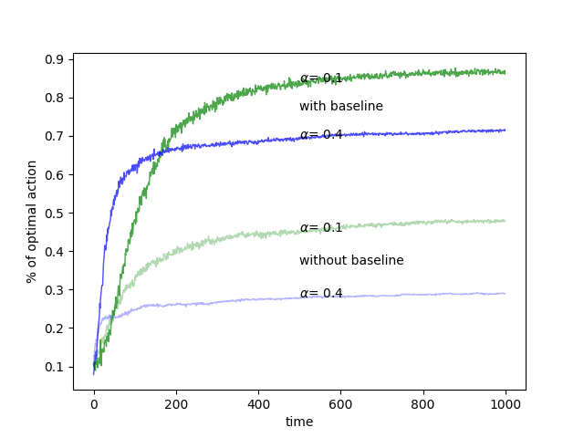
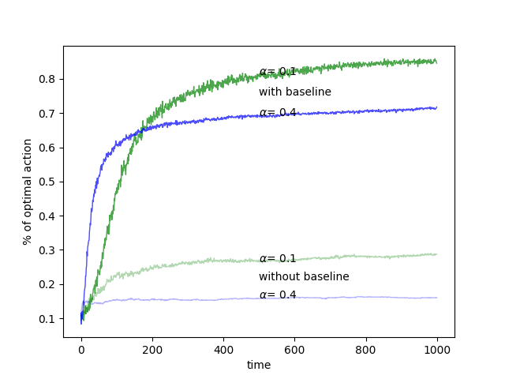

(draft)Gradient Bandit Algorithms
Keywords: numerical preference, softmax,
Gradient Bandit Algorithms
We have discussed several methods to solve $k$-armed bandits in stationary or nonstationary environment.
- ‘An Introduction to $k$-armed Bandit Problem’
- ‘Incremental Implementation’
- ‘Optimistic Initial Value’
- ‘the 10-armed Testbed’
However, the action-value methods based on the philosophy that we select actions to achieve our finial goal – maximizing the total rewards in the whole process. The general idea is selecting action basing on some criterions.
So we introduce another method that we select actions basing on a numerical preference which represent how we like each action. If we love action $a_i$ so much more than others, we select it. To measure how much we love each action, we define a function:
$$
H_t(a)\tag{1}
$$
where $t$ represents current time or step, $a$ is a certain action. When $H_t(a_i)>H_t(a_j)$ where $i\neq j$, we prefer action $i$ at time $t$. So the interval of the value of ‘numerical preference’ is not so important, but which one is relatively big is more attractive. In other words, the relation of $H_t(a_1)=0.01$ and $H_t(a_2)=0.001$ and the relation of $H_t(a_1)=100,001$ and $H_t(a_1)=100,000$ are equivalent. To make this strategy work, we first convert the numerical preference into some kind of probability distribution to sample action. The soft-max distribution
$$
\mathrm{Pr}{A_t = a}\doteq \frac{e^{H_t(a)}}{\sum_b^{k}e^{H_t(b)}}\tag{2}
$$
where $H_t(a)$ is the numerical preference of action $a$ that we select at step $t$, and the parameter $b$ in denominator is a dummy variable. More details of softmax distribution can be found in the post ‘An Introduction to Probabilistic Generative Models’.
And the distribution defined in equation(2) represents the probabitly of taking action $a$ at time $t$ and we denote it as:
$$
\pi_t(a)\doteq \frac{e^{H_t(a)}}{\sum_b^{k}e^{H_t(b)}}\tag{3}
$$
To the whole algorithm, we initial the preference of all actions to $0$(i.e. $H_1(a)=0$ for all $a$). And the idea of stochastic gradient ascent was employed to update the preference of each action by steps:
$$
H_{t+1}(A_t)\doteq H_t(A_t) + \alpha (R_t-\bar{R}_t)(1-\pi_t(A_t))\tag{4}
$$
and
$$
H_{t+1}(a)\doteq H_t(a) - \alpha (R_t-\bar{R}_t)\pi_t(A_t)\text{ for all }a\neq A_t\tag{5}
$$
where $R_t$ is the reward of current step $t$ of selected action $A_t$. $\alpha$ is the step size. And $\bar{R}_t\in \mathbb{R}$ is the average of all rewards up through and including time $t$. This average can be calculated by ‘incremental implementation’ . $\bar{R}_t$ serves as a baseline, and if the selected action $A_t$ got a reward greater than the baseline $\bar{R}_t$, the numerical preference of action $A_t$ increases(equation(4)). And the preference of the other actions decrease(equation(5)). However, if the selected action $A_t$ got a reward lower than the baseline $\bar{R}_t$, the numerical preference of action $A_t$ decrease(equation(4)). And the preference of the other actions increase(equation(5)).
Experiment
The code of gradient bandit algorithm:
1 | def GBA(self, step_size, baseline_type='reward_mean'): |
The whole project can be found:
And baseline can be set to the average of rewards or a constant. If the baseline is setted to 0, the algorithm behave poor, but if the baseline is setted to a number more than $0$ like $\bar{R}_t$ which is produced by the numerical distribution of bandit with mean $4$ and variance $1$, it looks good:

For the algorithm does not consider the magnitude of rewards, so the mean of $k$-armed bandit does not effect the result.
If we set the baseline to $-4$, the result is similar to the figure above:

References
[^1]: Koller, Daphne, Nir Friedman, Sašo Džeroski, Charles Sutton, Andrew McCallum, Avi Pfeffer, Pieter Abbeel et al. Introduction to statistical relational learning. MIT press, 2007.